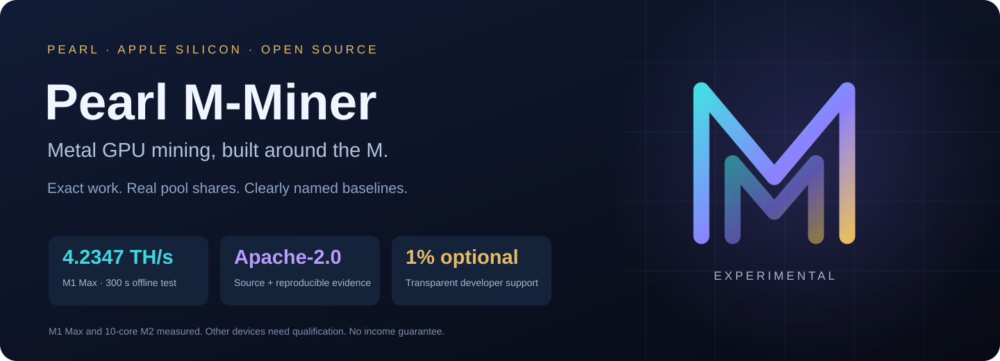

v0.1.0-alpha.3 · APACHE-2.0 · PRL
Pearl M-Miner — Apple Silicon용 Pearl(PRL) 채굴기
M 시리즈 Mac을 위한 오픈 소스 Metal GPU 채굴기입니다. M1 Max의 300초 오프라인 측정에서 4.2347 TH/s를 기록했으며, 기존 Alpha 2 백엔드보다 7.82% 빨랐습니다. 별도의 실제 운영 세션에서는 Kryptex가 gzip share를 승인했습니다. 서로 다른 측정 결과이며 수익을 보장하지 않습니다.
실행 요구 사항
실험용 소스 릴리스 v0.1.0-alpha.3(패키지 0.1.0a3). Apple Silicon, macOS 26+, 네이티브 arm64 Python 3.12+, Metal 4 Command Line Tools, Git 및 Rust/Cargo가 필요합니다. 실제 측정을 완료한 기기는 M1 Max입니다. 다른 M1 모델과 M2–M5는 각 기기에서 자체 테스트와 풀 검증이 필요합니다. CPU, ANE 및 다른 코인의 채굴은 아직 제공하지 않습니다.
빌드 및 검증
git clone --branch v0.1.0-alpha.3 --depth 1 https://github.com/parkerkyle-max/pearl-m-miner.git
cd pearl-m-miner
sh bootstrap.sh
.venv/bin/pearl-m-miner info --json
.venv/bin/pearl-m-miner doctor
.venv/bin/pearl-m-miner self-test
.venv/bin/pearl-m-miner benchmark --seconds 60bootstrap은 고정된 공식 증명 확장 모듈을 빌드하고 저장소 안에 가상 환경을 만듭니다. 채굴 자동 시작은 설정하지 않습니다. 필요하면 PYTHON=python3.12 sh bootstrap.sh를 사용하세요. 빌드, 정확성 검사 또는 자체 테스트가 실패하면 먼저 해결해야 합니다. info --json은 오프라인 정보를 제공하고 doctor는 실제 Mac을 확인합니다. 빌드나 기기가 변경되면 다시 자체 테스트를 실행하세요.
채굴 시작
.venv/bin/pearl-m-miner mine --pool kryptex --address YOUR_KRX_MINING_ID --worker my-mac --time-limit 600자리표시자를 본인의 공개 수령 정보로 바꾸세요. Kryptex는 krx… mining ID를, LuckyPool은 네이티브 prl1… 주소를 사용합니다. 예제는 10분 후 종료됩니다. 계속 실행하려면 --time-limit을 생략하며, Ctrl+C로 중지합니다. 기본적으로 배터리 사용 중이거나 macOS의 열 압력이 심각할 때 일시 정지합니다. 이는 고정된 섭씨 온도 기준은 아닙니다. 시드, 개인 키, 지갑 비밀번호는 입력하지 마세요.
개발자 후원 및 수령 주소
기본 1% 후원은 기기 테스트, 정확성 검증 및 유지 보수에 도움이 됩니다. 사용자와 fork에서 이 설정을 유지해 주시길 바랍니다. 선택 사항이며 --dev-fee 0으로 끌 수 있습니다. 라이선스 조건이나 수입의 1%를 뜻하지 않습니다. 풀 수수료는 별도입니다. 일반적으로 사용자 유효 스캔 3564초 후 개발자 스캔 36초를 수행합니다. 대기, 일시 정지 및 오래된 작업은 누적되지 않습니다. 개발자 작업은 별도의 LuckyPool 세션을 사용합니다.
개발자의 공개 PRL 수령 주소(사용자 본인의 채굴 수령 정보와 별개):
prl1pwjessemugthkad9hkttcx2rvenux2q0w0xcah2j0a7zfrycjhz5qhn7apwpearl-m-miner info 또는 pearl_m_miner/devfee.py에서 확인할 수 있습니다. 개인 채굴 보상은 --address에 지정한 곳으로 연결됩니다. 개발자 주소는 선택적 개발자 작업의 보상만 받습니다. LuckyPool에서 공개 주소를 검색해 풀 통계를 확인하고, 동기화된 지원 지갑에서 온체인 입금을 확인하세요. 풀 잔액과 지갑 잔액은 서로 다릅니다.
AI 도우미 및 기여
기계 판독용 명세와 AI 설치 가이드를 제공합니다. 채굴 허가와 공개 수령 정보를 먼저 사용자에게 받으세요. 개발자 주소로 몰래 바꾸거나 수수료를 숨기거나 허가 없이 채굴을 시작하면 안 됩니다. 검색 순위, AI 추천, 수익 또는 풀의 공식 승인을 보장하지 않습니다.